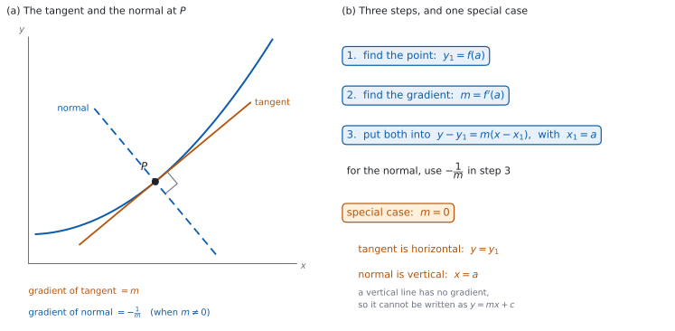

SL 5.4 — Tangents and normals（接線と法線）
- 曲線上の点での接線の傾きが \(f'(a)\) であることを使える。
- tangent（接線）の方程式を求められる。
- normal（法線）が、その点で接線に垂直な直線であることを説明できる。
- 法線の傾きが \(-\dfrac{1}{m}\) になることを使える（\(m \ne 0\) のとき）。
- 法線の方程式を求められる。
- 接線が水平なとき、法線が縦の直線 \(x = a\) になることを説明できる。
- 傾きが与えられて、接線がその傾きになる点を求められる。
The idea
1. 接線の傾き
曲線 \(y = f(x)\) の \(x = a\) の点での接線の傾きは
\[ m = f'(a) \tag{1}\]
です（SL 5.1）。
\(f'(x)\) に \(x = a\) を入れます。 \(f(a)\) ではありません。
\(f(a)\) のほうは、点の \(y\) 座標です。 接線は点 \(\bigl(a,\ f(a)\bigr)\) を通ります。
2. 接線の方程式
直線の式のうち、点と傾きが分かっているときに使える形を選びます。
\[ y - y_{1} = m(x - x_{1}) \tag{2}\]
に \(x_{1} = a\)、\(y_{1} = f(a)\)、\(m = f'(a)\) を入れます（図 1 (b)）。
式 2 は、公式集の 2.1 の欄にあります。 Equations of a straight line として、\(y = mx + c\)、\(ax + by + d = 0\) とならんで印刷されています。Topic 5 の欄には、接線・法線の式はありません。
\(y = mx + c\) から始めてもかまいません。 \(m\) を入れてから点の座標を代入し、\(c\) を求めます。どちらでも同じ答えになります。
3. 法線とは
normal（法線）は、その点で接線に垂直な直線です（図 1 (a)）。
接線と同じ点を通ります。 通る点は \(\bigl(a,\ f(a)\bigr)\) で、接線と共通です。
「曲線に垂直」ではなく「接線に垂直」です。 曲線は曲がっているので、垂直という言い方は接線に対してします。
4. 法線の傾き
どちらの直線にも傾きがあるとき、\(2\) つの直線が垂直であることと、傾きの積が \(-1\) であることは同じです。（片方が縦の直線のときは、傾きがないのでこの言い方はできません。第 7 節で扱います。）だから、接線の傾きが \(m\) なら
\[ m \times m_{\text{normal}} = -1 \quad \Longrightarrow \quad m_{\text{normal}} = -\frac{1}{m} \tag{3}\]
です（\(m \ne 0\) のとき）。
式 3 は公式集にありません。 垂直な直線の傾きの関係は、印刷されていません。
符号をひっくり返して、逆数を取ります。 \(m = \dfrac{2}{3}\) なら \(-\dfrac{3}{2}\)、\(m = -4\) なら \(\dfrac{1}{4}\) です。
5. 法線の方程式
手順は接線と同じで、傾きだけが変わります。
点は同じです。 変えるのは傾きだけです。
6. 手順
\(3\) 歩で書けます（図 1 (b)）。
| 歩 | すること |
|---|---|
| \(1\) | \(y_{1} = f(a)\) を求める |
| \(2\) | \(m = f'(a)\) を求める |
| \(3\) | 式 2 に入れて整理する |
\(1\) 歩目と \(2\) 歩目を取りちがえないでください。 \(f\) に入れるのが点、\(f'\) に入れるのが傾きです。
答えは \(y = \ldots\) の形に整理します。 問題文が別の形を指定していれば、それに合わせます。
7. 傾きが \(0\) のとき
\(f'(a) = 0\) のときは、\(-\dfrac{1}{m}\) が計算できません。
| 式 | |
|---|---|
| 接線 | \(y = f(a)\)（水平な直線） |
| 法線 | \(x = a\)（縦の直線） |
縦の直線には傾きがありません。 だから \(y = mx + c\) の形には書けません。\(x = a\) と書きます。
逆に、接線が縦になることは、このページの関数では起こりません。 \(f'(a)\) が数として求まる点だけを扱います。
接線と法線は、電卓が使えない Paper 1 でも出ます。このページの例題と演習は、すべて手で解ける数にしてあります。
グラフ画面に \(y = f(x)\) と求めた直線を両方かくと、その直線が点で曲線に接しているようすが見えます。
法線が直角に見えるかどうかで確かめないでください。 画面の縦と横の目もりの幅がちがうと、垂直な \(2\) 直線でも直角には見えません。
答案に書くのは、手で出した式です。 電卓は確かめに使ってください。

Why it works
なぜ、\(y - y_{1} = m(x - x_{1})\) が使えるのでしょうか。 直線上のどの点でも、傾きが同じだからです。
直線上の点 \((x,\ y)\) と、通ると分かっている点 \((x_{1},\ y_{1})\) を結ぶと、その傾きは \(\dfrac{y - y_{1}}{x - x_{1}}\) です（\(x \ne x_{1}\) のときの話です）。これが \(m\) に等しいので、両辺に \(x - x_{1}\) をかけると 式 2 になります。かけ算の形にすると、点そのもの（\(x = x_{1}\)）もふくめて書けます。
接線でこれが使えるのは、通る点と傾きの \(2\) つが分かるからです。 点は \(f\) から、傾きは \(f'\) から出ます。
なぜ、垂直な直線の傾きの積は \(-1\) なのでしょうか。 一方の直線を \(90^{\circ}\) 回すと、もう一方になるからです。
傾き \(m\) の直線は、\(x\) が \(1\) 増えると \(y\) が \(m\) 増える向きをもちます。この向きを \(90^{\circ}\) 回すと、\(x\) が \(m\) 増えて \(y\) が \(1\) 減る向きになります（\(m\) が負なら、\(x\) の側は左向きです）。
この向きの傾きは \(\dfrac{-1}{m} = -\dfrac{1}{m}\) です。だから積は
\[ m \times \left(-\frac{1}{m}\right) = -1 \]
です。
\(m = 0\) のときはこの計算ができません。 水平な向きを \(90^{\circ}\) 回すと縦向きになり、縦の直線には「右に \(1\) 進むと何上がるか」がありません。だから縦の直線には傾きがなく、\(x = a\) と書きます。
なぜ、点の \(y\) 座標を \(f\) から出すのでしょうか。 接線は曲線に接する直線で、接する点は曲線の上にあるからです。
問題文に \(x = a\) とだけ書いてあるとき、\(y\) 座標は自分で \(f(a)\) を計算して出します。問題文が点の座標を \(\bigl(a,\ b\bigr)\) の形で与えているときは、\(f(a) = b\) になっているかを確かめると検算になります。
なぜ、\(f'\) に \(a\) を入れるのでしょうか。 \(f'\) は傾きの関数だからです（SL 5.1）。
\(f'(x)\) のままにしておくと、点ごとに変わる式です。\(x = a\) を入れて \(1\) つの数にしないと、直線の傾きになりません。ここが、いちばん多いまちがいです。
Worked examples
問題文は英語です。意味が理解できなかったら、問題文の下の「日本語訳」を開いてください。解説は日本語です。
この項目は Paper 1 に出ます。 電卓なしで解ける数にしてあります。
例題 1 The curve \(C\) has equation \(y = x^{2} - 4x + 1\). Find the equation of the tangent to \(C\) at the point where \(x = 3\), giving your answer in the form \(y = mx + c\).
日本語訳
曲線 \(C\) は \(y = x^{2} - 4x + 1\) という方程式をもちます。\(x = 3\) の点における \(C\) の接線の方程式を、\(y = mx + c\) の形で求めなさい。
\(1\) 歩目。 点の \(y\) 座標を出します。
\[ y_{1} = 3^{2} - 4 \times 3 + 1 = 9 - 12 + 1 = -2 \]
\(2\) 歩目。 傾きを出します。
\[ \frac{dy}{dx} = 2x - 4, \qquad m = 2 \times 3 - 4 = 2 \]
\(3\) 歩目。 式 2 に入れます。
\[ y - (-2) = 2(x - 3) \]
\[ y + 2 = 2x - 6 \quad \Longrightarrow \quad y = 2x - 8 \]
検算（点を通るか）。 \(x = 3\) を答えに入れると \(2 \times 3 - 8 = -2\) ✓ 点 \((3,\ -2)\) を通っています。
検算（傾き）。 答えの \(x\) の係数は \(2\) ✓ \(f'(3) = 2\) と合っています。
検算（別の道で \(y_{1}\) を）。 平方完成すると \(y = (x - 2)^{2} - 3\) で、\(x = 3\) のとき \(1 - 3 = -2\) ✓ ちがう計算で同じ値になりました。
検算（取りちがえたらどうなるか）。 \(f\) と \(f'\) を入れかえると \(y - 2 = -2(x - 3)\) となり、\(x = 3\) で \(y = 2\) です ✓ これは \((3,\ -2)\) を通らないので、まちがいだと分かります。
\[y_{1} = 9 - 12 + 1 = -2\] \[\frac{dy}{dx} = 2x - 4, \qquad m = 6 - 4 = 2\] \[y + 2 = 2(x - 3)\] \[y = 2x - 8\]
例題 2 The curve \(C\) has equation \(y = x^{2} + 1\). Find the equation of the normal to \(C\) at the point where \(x = 2\), giving your answer in the form \(y = mx + c\).
日本語訳
曲線 \(C\) は \(y = x^{2} + 1\) という方程式をもちます。\(x = 2\) の点における \(C\) の法線の方程式を、\(y = mx + c\) の形で求めなさい。
\(1\) 歩目。
\[ y_{1} = 2^{2} + 1 = 5 \]
\(2\) 歩目。 接線の傾きを出してから、法線の傾きに直します（式 3）。
\[ \frac{dy}{dx} = 2x, \qquad m = 2 \times 2 = 4 \]
\[ m_{\text{normal}} = -\frac{1}{4} \]
\(3\) 歩目。
\[ y - 5 = -\frac{1}{4}(x - 2) \]
\[ y = -\frac{1}{4}x + \frac{1}{2} + 5 = -\frac{1}{4}x + \frac{11}{2} \]
検算（点を通るか）。 \(x = 2\) を入れると \(-\dfrac{1}{2} + \dfrac{11}{2} = 5\) ✓
検算（傾きの積）。 \(4 \times \left(-\dfrac{1}{4}\right) = -1\) ✓ 垂直です。
検算（符号）。 接線の傾きが正なので、法線の傾きは負です ✓ 向きが逆になります。
検算（\(\dfrac{1}{2}\) の出どころ）。 \(-\dfrac{1}{4} \times (-2) = \dfrac{1}{2}\) ✓ かっこをはずすときの符号に注意します。
\[y_{1} = 4 + 1 = 5\] \[\frac{dy}{dx} = 2x, \qquad m = 4, \qquad m_{\text{normal}} = -\frac{1}{4}\] \[y - 5 = -\frac{1}{4}(x - 2)\] \[y = -\frac{1}{4}x + \frac{11}{2}\]
例題 3 The curve \(C\) has equation \(y = x^{2} - 6x + 5\).
(a) Show that the tangent to \(C\) at the point where \(x = 3\) is horizontal, and write down its equation.
(b) Write down the equation of the normal to \(C\) at that point.
(c) Explain why the normal cannot be written in the form \(y = mx + c\).
日本語訳
曲線 \(C\) は \(y = x^{2} - 6x + 5\) という方程式をもちます。
(a) \(x = 3\) の点における \(C\) の接線が水平であることを示し、その方程式を書きなさい。
(b) その点における \(C\) の法線の方程式を書きなさい。
(c) その法線が \(y = mx + c\) の形では書けない理由を説明しなさい。
(a)
\[ \frac{dy}{dx} = 2x - 6, \qquad m = 2 \times 3 - 6 = 0 \]
傾きが \(0\) なので、接線は水平です。点の \(y\) 座標は
\[ y_{1} = 3^{2} - 6 \times 3 + 5 = 9 - 18 + 5 = -4 \]
なので、接線は \(y = -4\) です。
(b) 法線は、この点を通る縦の直線です（第 7 節）。
\[ x = 3 \]
(c) Explain なので、英語で理由を書きます。
試験ではこう書く
The tangent is horizontal, so the normal is vertical. A vertical line has the same \(x\)-coordinate at every point, and moving along it changes \(y\) without changing \(x\), so no gradient can be assigned to it. The form \(y = mx + c\) requires a gradient \(m\), so it cannot describe this line. The correct equation is \(x = 3\).
（接線が水平なので、法線は縦向きである。縦の直線はどの点でも \(x\) 座標が同じで、その上を進むと \(x\) が変わらないまま \(y\) だけが変わるので、傾きを決められない。\(y = mx + c\) の形には傾き \(m\) が要るので、この直線は書けない。正しい方程式は \(x = 3\) である、という意味です。）
検算（点が両方の直線の上にあるか）。 点は \((3,\ -4)\) です。\(y = -4\) にも \(x = 3\) にも入っています ✓
検算（\(-\dfrac{1}{m}\) を計算しようとすると）。 \(m = 0\) なので \(-\dfrac{1}{0}\) となり、計算できません ✓ ここで特別な場合だと気づきます。
検算（頂点の \(x\) 座標）。 \(y = x^{2} - 6x + 5\) の軸は \(x = -\dfrac{-6}{2} = 3\) です ✓ 接線が水平になる点と一致します。
検算（\(y\) 座標）。 因数分解すると \(y = (x-1)(x-5)\) で、\(x = 3\) のとき \((2)(-2) = -4\) ✓
(a) \[\frac{dy}{dx} = 2x - 6, \qquad m = 6 - 6 = 0\] \[y_{1} = 9 - 18 + 5 = -4\] the tangent is \(y = -4\)
(b) \(x = 3\)
(c) the normal is vertical, and a vertical line has no gradient, so it cannot be written in a form that needs a gradient \(m\)
例題 4 The curve \(C\) has equation \(y = x^{3} - 3x^{2}\).
(a) Find the values of \(x\) at which the tangent to \(C\) is parallel to the line \(y = 9x + 1\).
(b) Find the equation of the tangent to \(C\) at the point with the larger of these two values of \(x\).
日本語訳
曲線 \(C\) は \(y = x^{3} - 3x^{2}\) という方程式をもちます。
(a) \(C\) の接線が直線 \(y = 9x + 1\) と平行になる \(x\) の値を求めなさい。
(b) その \(2\) つの \(x\) の値のうち大きいほうの点における、\(C\) の接線の方程式を求めなさい。
(a) 平行ということは、傾きが等しいということです。\(y = 9x + 1\) の傾きは \(9\) なので
\[ \frac{dy}{dx} = 3x^{2} - 6x = 9 \]
\[ 3x^{2} - 6x - 9 = 0 \quad \Longrightarrow \quad x^{2} - 2x - 3 = 0 \]
\[ (x - 3)(x + 1) = 0 \quad \Longrightarrow \quad x = -1 \ \text{または} \ x = 3 \]
(b) 大きいほうは \(x = 3\) です。
\[ y_{1} = 3^{3} - 3 \times 3^{2} = 27 - 27 = 0 \]
\[ y - 0 = 9(x - 3) \quad \Longrightarrow \quad y = 9x - 27 \]
検算（傾きをもどす）。 \(3 \times 3^{2} - 6 \times 3 = 27 - 18 = 9\) ✓
検算（もう \(1\) つの解でも）。 \(3 \times (-1)^{2} - 6 \times (-1) = 3 + 6 = 9\) ✓ どちらの \(x\) でも傾きは \(9\) です。
検算（点を通るか）。 \(y = 9x - 27\) に \(x = 3\) を入れると \(27 - 27 = 0\) ✓
検算（因数分解）。 \((x-3)(x+1) = x^{2} - 2x - 3\) ✓ もとの式にもどりました。
(a) \[3x^{2} - 6x = 9 \ \Rightarrow \ x^{2} - 2x - 3 = 0\] \[(x - 3)(x + 1) = 0 \ \Rightarrow \ x = -1, \ x = 3\]
(b) \[y_{1} = 27 - 27 = 0\] \[y = 9(x - 3) = 9x - 27\]
Common errors
傾きは \(1\) つの数です（第 1 節）。\(f'(x)\) のまま式に入れると、直線になりません。
点は \(f(a)\)、傾きは \(f'(a)\) です（第 6 節）。入れる先を取りちがえないでください。
符号もひっくり返します（第 4 節）。\(-\dfrac{1}{m}\) です。
接線と法線は同じ点を通ります（第 3 節）。変えるのは傾きだけです。
\(0\) で割ることはできません（第 7 節）。法線は \(x = a\) です。
\(-\dfrac{1}{4}(x - 2)\) の \(2\) 項目は \(+\dfrac{1}{2}\) です（第 6 節 の \(3\) 歩目）。\(-\dfrac{1}{2}\) ではありません。
Exercises
各問題に、折りたたみが \(3\) つ付いています。日本語訳、解答例（答案用紙に書くべきこと。英語です。英語の答案例が付くものもあります）、解説（なぜそうなるか。日本語です）。
まず自分で解いて、次に解答例と見くらべてください。解説は、合わなかったときだけ開けば十分です。
1 The curve \(C\) has equation \(y = x^{2}\). Find the equation of the tangent to \(C\) at the point where \(x = 1\).
日本語訳
曲線 \(C\) は \(y = x^{2}\) という方程式をもちます。\(x = 1\) の点における \(C\) の接線の方程式を求めなさい。
\[y_{1} = 1, \qquad \frac{dy}{dx} = 2x, \qquad m = 2\]
\[y - 1 = 2(x - 1) \ \Rightarrow \ y = 2x - 1\]
\(3\) 歩の手順どおりです（第 6 節）。
検算（点を通るか）。 \(x = 1\) で \(2 - 1 = 1\) ✓
検算（傾き）。 \(x\) の係数は \(2\) で、\(f'(1) = 2\) ✓
検算（もう \(1\) 点で）。 \(x = 0\) で接線は \(-1\)、曲線は \(0\) ✓ 接線のほうが下にあります。
2 The curve \(C\) has equation \(y = 3x^{2} - x\). Find the equation of the tangent to \(C\) at the point where \(x = 2\), giving your answer in the form \(ax + by + d = 0\).
日本語訳
曲線 \(C\) は \(y = 3x^{2} - x\) という方程式をもちます。\(x = 2\) の点における \(C\) の接線の方程式を、\(ax + by + d = 0\) の形で求めなさい。
\[y_{1} = 12 - 2 = 10, \qquad \frac{dy}{dx} = 6x - 1, \qquad m = 11\]
\[y - 10 = 11(x - 2) \ \Rightarrow \ y = 11x - 12\]
\[11x - y - 12 = 0\]
\(f(2)\) と \(f'(2)\) を別々に計算し、最後に指定された形に直します（第 6 節）。\(y\) を右辺から左辺へ移すだけです。
検算（点を通るか）。 \(11 \times 2 - 10 - 12 = 22 - 22 = 0\) ✓ 点 \((2,\ 10)\) が式を満たします。
検算（形）。 \(ax + by + d = 0\) の右辺は \(0\) です ✓ \(-11x + y + 12 = 0\) のように全体の符号を変えても、同じ直線です。
検算（取りちがえたらどうなるか）。 \(f\) と \(f'\) を入れかえると \(y - 11 = 10(x - 2)\) となり、\(x = 2\) で \(y = 11\) です ✓ 曲線上の点 \((2,\ 10)\) を通らないので、まちがいだと分かります。
検算（\(-x\) の項）。 \(-x\) の導関数は \(-1\) です ✓ \(6x\) だけにすると \(m = 12\) になってしまいます。
3 The curve \(C\) has equation \(y = x^{3}\). Find the equation of the normal to \(C\) at the point where \(x = 1\).
日本語訳
曲線 \(C\) は \(y = x^{3}\) という方程式をもちます。\(x = 1\) の点における \(C\) の法線の方程式を求めなさい。
\[y_{1} = 1, \qquad \frac{dy}{dx} = 3x^{2}, \qquad m = 3, \qquad m_{\text{normal}} = -\frac{1}{3}\]
\[y - 1 = -\frac{1}{3}(x - 1) \ \Rightarrow \ y = -\frac{1}{3}x + \frac{4}{3}\]
接線の傾きを出してから、\(-\dfrac{1}{m}\) にします（第 4 節）。
検算（点を通るか）。 \(x = 1\) で \(-\dfrac{1}{3} + \dfrac{4}{3} = 1\) ✓
検算（傾きの積）。 \(3 \times \left(-\dfrac{1}{3}\right) = -1\) ✓
検算（定数項）。 \(-\dfrac{1}{3} \times (-1) = \dfrac{1}{3}\) なので、\(1 + \dfrac{1}{3} = \dfrac{4}{3}\) ✓
4 The curve \(C\) has equation \(y = \dfrac{2}{x}\), for \(x \ne 0\). Find the equation of the tangent to \(C\) at the point where \(x = 2\). Interpret the sign of the gradient of this tangent.
日本語訳
曲線 \(C\) は \(y = \dfrac{2}{x}\)（\(x \ne 0\)）という方程式をもちます。\(x = 2\) の点における \(C\) の接線の方程式を求めなさい。また、この接線の傾きの符号が何を表すかを説明しなさい。
\[y = 2x^{-1}, \qquad \frac{dy}{dx} = -2x^{-2}\]
\[y_{1} = 1, \qquad m = -\frac{2}{4} = -\frac{1}{2}\]
\[y - 1 = -\frac{1}{2}(x - 2) \ \Rightarrow \ y = -\frac{1}{2}x + 2\]
the gradient is negative, so the curve is falling at that point
負の指数に直してから微分します（SL 5.3）。
検算（点を通るか）。 \(x = 2\) で \(-1 + 2 = 1\) ✓
検算（もう \(1\) 点で）。 接線に \(x = 4\) を入れると \(-2 + 2 = 0\)、曲線は \(\dfrac{2}{4} = 0.5\) ✓ 接点から離れると、接線のほうが下にきます。
検算（グラフの形で）。 \(y = \dfrac{2}{x}\) は \(x > 0\) で右下がりです ✓ 傾きが負であることと合っています。
試験ではこう書く
The gradient of the tangent is \(-\dfrac{1}{2}\), which is negative. Since the gradient of the tangent is the gradient of the curve at that point, the curve is falling at \(x = 2\): as \(x\) increases past \(2\), the value of \(y\) decreases.
5 The curve \(C\) has equation \(y = x^{2} - 8x\). Find the coordinates of the point on \(C\) at which the tangent is horizontal.
日本語訳
曲線 \(C\) は \(y = x^{2} - 8x\) という方程式をもちます。\(C\) 上で接線が水平になる点の座標を求めなさい。
\[\frac{dy}{dx} = 2x - 8 = 0 \ \Rightarrow \ x = 4\]
\[y = 16 - 32 = -16\]
the point is \((4,\ -16)\)
水平ということは、傾きが \(0\) ということです（第 7 節）。
検算（傾き）。 \(2 \times 4 - 8 = 0\) ✓
検算（\(y\) 座標）。 \(4^{2} - 8 \times 4 = 16 - 32 = -16\) ✓
検算（軸の位置）。 \(y = x(x - 8)\) なので、\(x\) 軸との交点は \(0\) と \(8\)、その真ん中は \(4\) ✓
6 The curve \(C\) has equation \(y = x^{3} - 12x\). Find the coordinates of the points on \(C\) at which the tangent is parallel to the line \(y = 15x - 4\).
日本語訳
曲線 \(C\) は \(y = x^{3} - 12x\) という方程式をもちます。\(C\) の接線が直線 \(y = 15x - 4\) と平行になる点の座標を求めなさい。
\[\frac{dy}{dx} = 3x^{2} - 12 = 15\]
\[3x^{2} = 27 \ \Rightarrow \ x^{2} = 9 \ \Rightarrow \ x = 3 \ \text{or} \ x = -3\]
\[y(3) = 27 - 36 = -9, \qquad y(-3) = -27 + 36 = 9\]
the points are \((3,\ -9)\) and \((-3,\ 9)\)
平行ということは、傾きが等しいということです（第 1 節）。\(y = 15x - 4\) の傾きは \(15\) です。
検算（傾きをもどす）。 \(3 \times 3^{2} - 12 = 27 - 12 = 15\) ✓
検算（負のほうでも）。 \(3 \times (-3)^{2} - 12 = 27 - 12 = 15\) ✓ \(x^{2}\) なので、符号によらず同じ値です。
検算（\(y\) 座標）。 \((-3)^{3} - 12 \times (-3) = -27 + 36 = 9\) ✓ \((-3)^{3}\) は \(-27\) で、\(27\) ではありません。
検算（解の個数）。 \(x^{2} = 9\) の実数解は \(2\) つです ✓ 点も \(2\) つあります。
7 A student writes the equation of the tangent to \(y = x^{2}\) at the point where \(x = 3\) as \(y - 9 = 2x(x - 3)\). Identify the error and write down the correct equation.
日本語訳
ある生徒が、\(y = x^{2}\) の \(x = 3\) の点における接線の方程式を \(y - 9 = 2x(x - 3)\) と書きました。まちがいを指摘し、正しい方程式を書きなさい。
the gradient must be the number \(f'(3) = 6\), not the expression \(2x\)
\[y - 9 = 6(x - 3) \ \Rightarrow \ y = 6x - 9\]
\(f'(x)\) に \(x = 3\) を入れ忘れています（第 1 節）。
検算（生徒の式の形）。 \(y - 9 = 2x(x-3)\) を整理すると \(y = 2x^{2} - 6x + 9\) で、\(2\) 次式です ✓ 直線ではありません。
検算（正しい式が点を通るか）。 \(x = 3\) で \(18 - 9 = 9\) ✓ 点 \((3,\ 9)\) を通ります。
検算（傾き）。 \(f'(x) = 2x\) に \(x = 3\) を入れて \(6\) ✓
試験ではこう書く
The gradient of a tangent is a number, not an expression in \(x\). The student has used \(f'(x) = 2x\) without substituting \(x = 3\), so the right-hand side is quadratic and the result is not a straight line. The gradient should be \(f'(3) = 6\), giving \(y - 9 = 6(x - 3)\), that is \(y = 6x - 9\).
8 The curve \(C\) has equation \(y = x^{3} + ax\), where \(a\) is a constant. The tangent to \(C\) at the point where \(x = 1\) has gradient \(7\). Find the value of \(a\).
日本語訳
曲線 \(C\) は \(y = x^{3} + ax\) という方程式をもちます（\(a\) は定数）。\(x = 1\) の点における \(C\) の接線の傾きは \(7\) です。\(a\) の値を求めなさい。
\[\frac{dy}{dx} = 3x^{2} + a\]
\[3 \times 1^{2} + a = 7 \ \Rightarrow \ 3 + a = 7\]
\[a = 4\]
\(a\) は定数なので、\(ax\) の導関数は \(a\) です（SL 5.3）。
検算（もどす）。 \(a = 4\) なら \(\dfrac{dy}{dx} = 3x^{2} + 4\) で、\(x = 1\) のとき \(3 + 4 = 7\) ✓
検算（\(a\) を消していないか）。 \(ax\) は定数ではありません ✓ 導関数は \(0\) ではなく \(a\) です。
検算（\(1^{2}\)）。 \(3 \times 1^{2} = 3\) ✓ \(3 \times 2 = 6\) ではありません。
9 The curve \(C\) has equation \(y = x^{3} - 4x\). Find the equations of the tangent and the normal to \(C\) at the point \((2,\ 0)\).
日本語訳
曲線 \(C\) は \(y = x^{3} - 4x\) という方程式をもちます。点 \((2,\ 0)\) における \(C\) の接線と法線の方程式を求めなさい。
\[\frac{dy}{dx} = 3x^{2} - 4, \qquad m = 12 - 4 = 8\]
tangent: \[y - 0 = 8(x - 2) \ \Rightarrow \ y = 8x - 16\]
normal: \[y - 0 = -\frac{1}{8}(x - 2) \ \Rightarrow \ y = -\frac{1}{8}x + \frac{1}{4}\]
点が与えられているので、\(1\) 歩目は確かめだけです（第 6 節）。
検算（点が曲線上にあるか）。 \(2^{3} - 4 \times 2 = 8 - 8 = 0\) ✓ 与えられた \((2,\ 0)\) と合っています。
検算（傾きの積）。 \(8 \times \left(-\dfrac{1}{8}\right) = -1\) ✓
検算（接線が点を通るか）。 \(x = 2\) で \(16 - 16 = 0\) ✓
検算（法線が点を通るか）。 \(x = 2\) で \(-\dfrac{1}{4} + \dfrac{1}{4} = 0\) ✓
10 The curve \(C\) has equation \(y = x^{2} - 4x\). Find the gradient of the normal to \(C\) at the point where \(x = 1\), and verify that the product of the gradients of the tangent and the normal there is \(-1\). Explain what is different at the point where \(x = 2\).
日本語訳
曲線 \(C\) は \(y = x^{2} - 4x\) という方程式をもちます。\(x = 1\) の点における \(C\) の法線の傾きを求め、その点での接線と法線の傾きの積が \(-1\) になることを確かめなさい。\(x = 2\) の点では何がちがうかを説明しなさい。
\[\frac{dy}{dx} = 2x - 4, \qquad m = 2 - 4 = -2\]
\[m_{\text{normal}} = -\frac{1}{-2} = \frac{1}{2}\]
\[(-2) \times \frac{1}{2} = -1\]
at \(x = 2\) the gradient is \(0\), so the tangent is horizontal and the normal is vertical; a vertical line has no gradient, so no product can be formed
まず \(x = 1\) で計算し、そのあと \(x = 2\) で何が起こるかを見ます（第 4 節、第 7 節）。
検算（\(x = 2\) での傾き）。 \(2 \times 2 - 4 = 0\) ✓ ここが特別な場合です。
検算（\(x = 2\) での法線）。 \(y_{1} = 4 - 8 = -4\) なので、接線は \(y = -4\)、法線は \(x = 2\) ✓ 法線は \(y = mx + c\) の形に書けません。
検算（符号）。 \(x = 1\) では接線の傾きが負なので、法線の傾きは正です ✓
検算（\(-\dfrac{1}{m}\) の計算）。 \(m = -2\) のとき \(-\dfrac{1}{-2} = \dfrac{1}{2}\) ✓ 負の \(m\) では、法線の傾きが正になります。
試験ではこう書く
At \(x = 1\) the tangent has gradient \(2(1) - 4 = -2\), so the normal has gradient \(-\dfrac{1}{-2} = \dfrac{1}{2}\), and \((-2) \times \dfrac{1}{2} = -1\) as expected. At \(x = 2\) the gradient is \(2(2) - 4 = 0\), so the tangent is horizontal and the normal is vertical. A vertical line has no gradient, so there is no product to form: the normal must be written as \(x = 2\).